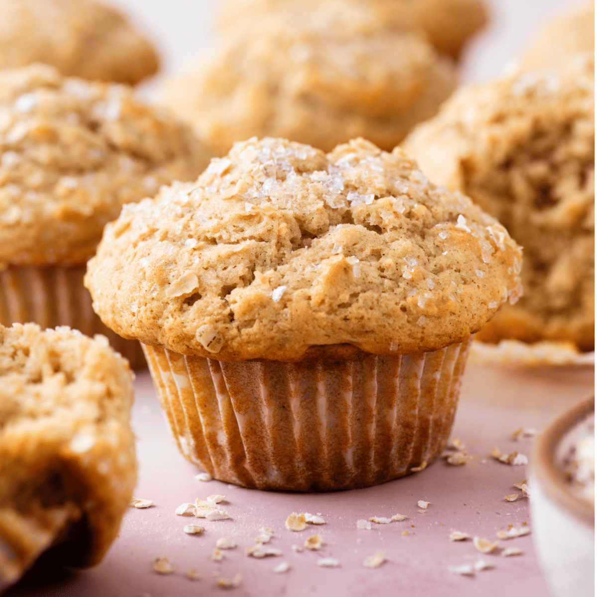

Banana Muffins
|  |
Banana bread is wonderful, but muffins are quicker, more convenient, easily portable, and taste just as good. These quick and easy banana muffins bake in 30 minutes, so if you need to be in and out of the kitchen FAST, this recipe is your savior. We always have bananas in the house which means we eventually have spotty bananas ready for baking! |
|---|
Ingredients
- 1 and 1/2 cups (188g) all-purpose flour (spooned & leveled)
- 1 teaspoon baking powder
- 1 teaspoon baking soda
- 1/2 teaspoon salt
- 1 teaspoon ground cinnamon
- 1/4 teaspoon ground nutmeg
- 1 and 1/2 cups (345g) mashed bananas
- 6 Tablespoons (85g) unsalted butter, melted (or melted coconut oil)
- 2/3 cup (135g) packed light or dark brown sugar
- 1 large egg, at room temperature
- 1 teaspoon pure vanilla extract
- 2 Tablespoons (30ml) milk*
- 1 cup chopped walnuts, pecans, or chocolate chips
Steps
- Preheat oven to 425°F (218°C). Spray a 12-count muffin pan with nonstick spray or use cupcake liners.
- Whisk the flour, baking powder, baking soda, salt, cinnamon, and nutmeg together in a medium bowl. Set aside. In a large bowl or in the bowl of your stand mixer, mash the bananas. On medium speed, beat or whisk in the melted butter, brown sugar, egg, vanilla extract, and milk. Pour the dry ingredients into the wet ingredients, then beat or whisk until combined. If adding nuts or chocolate chips, fold them in now. Batter will be thick.
- Spoon the batter into liners, filling them all the way to the top. Bake for 5 minutes at 425°F, then, keeping the muffins in the oven, reduce the oven temperature to 350°F (177°C). Bake for an additional 16–18 minutes or until a toothpick inserted in the center comes out clean. The total time these muffins take in the oven is about 21–23 minutes, give or take. (For mini muffins, bake 12–14 total minutes at 350°F (177°C).) Allow the muffins to cool for 5 minutes in the muffin pan, then transfer to a wire cooling rack to continue cooling.
- Muffins stay fresh covered at room temperature for a few days or in the refrigerator for up to 1 week.